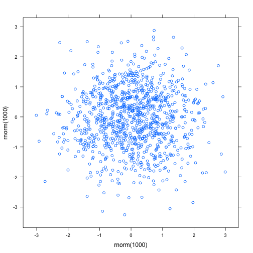

Ploting capabilities of the R
R is not only flexible for statistical computing but also for ploting. Here are some exampple from Vanderbuilt University professor Tsatuki.
> set.seed(12000)
> dat <- data.frame(a=rnorm(1000),b=rnorm(1000))
> size1 <- 1.7
> size2 <- 1.0
> margins <- c(2.5,5,2.5,5)+.1
> char.expansion <- 1.0
> # Background colors
> bkgrc1 <- '#fcfbfd'
> bkgrc2 <- grey(.95)
> # Line and text colors
> linec <- grey(.90)
> textc1 <- grey(.20)
> textc2 <- grey(.25)
> grey1 <- grey(.75)
> pointc <- c('black','red','blue','purple')
> xrange <- range(dat$a)
> yrange <- range(dat$b)
> mono.adjust <- 0.8 # mono font looks bigger compared to serif.
> par(family='serif', mar=margins, bg=bkgrc2, cex=char.expansion)
> plot(dat$a~dat$b,type='n', las=1, bty='n', xaxt='n', yaxt='n',
+ xlab='', ylab='', xlim=xrange, xaxs='i', yaxs='i')
> rect(xrange[1], yrange[1], xrange[2], yrange[2], col=bkgrc1, border=bkgrc1)
> axis(side=1, at=1*(-3:3), label=-3:3, tick=FALSE, las=1, line=-.8, cex.axis=size2)
> axis(side=2, at=1*(-3:3), label=-3:3, tick=FALSE, las=1, line=-.8, cex.axis=size2)
> axis(side=4, at=1*(-3:3), label=-3:3, tick=FALSE, las=1, line=-.8, cex.axis=size2)
> abline(h=1*(-3:3), col=linec, lty=1)
> ylines <- length(dat$b)
> for(i in ylines){ lines(rep(i,2), c(0,600), col=linec, lty=1) }
> points(dat$a~dat$b,col=grey1,pch=20)
